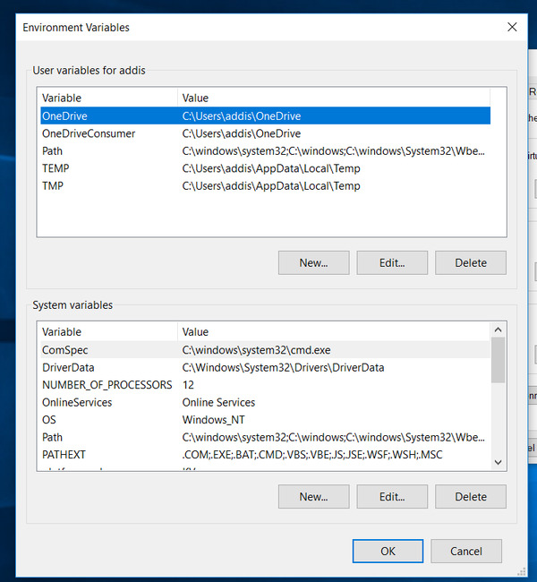
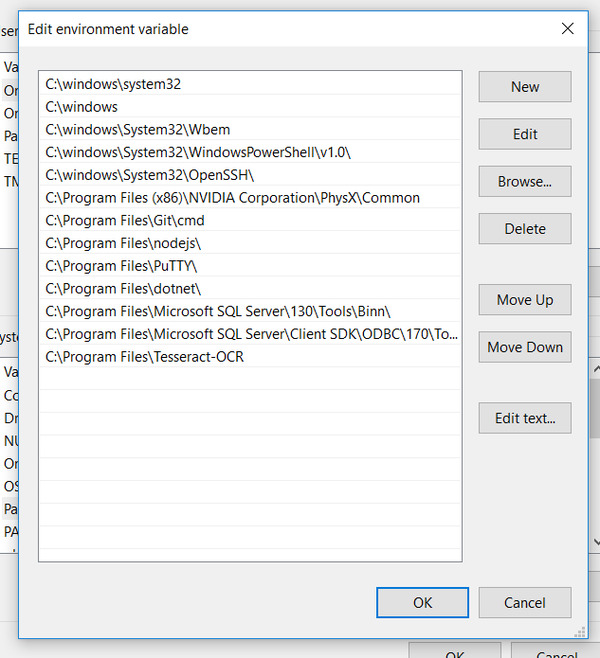

8 Lesson 08
8.1 Building Memex - Step 2
Now that we have all files and foolders created, we need to extract text from PDFs. We can use OCR, or (optical character recognition), — a method that allows us to extract editable text from images containing text.
8.2 OCR software: Tesseract
In order to run OCR, we need to have a suitable software installed on our computers. Tesseract is one of such options—it is free and open source OCR engine. We will need to install Tesseract and some Python libraries that “cooperate” with Tesseract. Keep in mind that usually OCR is language specific, i.e. you also need to have additional files for relevant languages installed; and when you run an OCR procedure, you need to explicitely declare the language that you want to recognize (details below). Language codes used in Tesseract can be found at the end of this lesson (you can also find suggestions on how to deal with automatic language selection in your Python code).
General information on how to make Tesseract work on your machine can be found here.
8.2.0.1 Installing on Mac
We can use brew to install everything we need on Mac:
brew install tesseractSupport for additional languages can be installed in the following manner (lang is the language code that Tesseract uses to refer to a specific language):
brew install tesseract-langThe following command will list all available languages (as language codes). This will work only after you have installed Tesseract.
tesseract --list-langs8.2.0.2 Installing on Linux
sudo apt install tesseract-ocr
sudo apt install libtesseract-devOn how to install additional languages, see here.
8.2.0.3 Installing on Windows
(Source: https://automaticaddison.com/how-to-set-up-anaconda-for-windows-10/)
- Go to Tesseract at UB Mannheim.
- Download the Tesseract installer (64-bit).
- Run the installe and follow the the prompts. (You can choose additional languages during the installation.)

- Once Tesseract OCR is downloaded and installed, find it on your system.
- Copy the name of the folder where it is located. The default path is
C:\Program Files\Tesseract-OCR - Search for “Environment Variables” on your computer. (“Environment Variable” is a button in “System Properties”, Tab “Advanced”)

- Under “System Variables,” select “Path”, and then click “Edit”.
- Add the path:
C:\Program Files\Tesseract-OCR(or whatever it is on you machine)

- Click “OK” a few times to close all windows.
- Open up the Anaconda Prompt or Anaconda Powershell Prompt
- Type
tesseractand hit “Enter”. If everything is installed correctly, you should see:
Usage:
tesseract --help | --help-extra | --version
tesseract --list-langs
tesseract imagename outputbase [options...] [configfile...]
OCR options:
-l LANG[+LANG] Specify language(s) used for OCR.
NOTE: These options must occur before any configfile.
Single options:
--help Show this help message.
--help-extra Show extra help for advanced users.
--version Show version information.
--list-langs List available languages for tesseract engine.8.2.0.4 For all systems after Tesserract is installed
After Tesseract is installed we need to install a couple of Python libraries:
python -m pip install Pillow
python -m pip install pytesseractJust remember that you need to use the Python command that you are using to run your scripts (for example, on Mac python is for Python 2.7, and python3 is commonly for Python 3.X)
Alternatively, if you use Anaconda:
conda install -c conda-forge Pillow
conda install -c conda-forge pytesseract8.2.0.5 Final Test
In you command line tool, type tesseract. If everything is installed correctly, you shoudl see the following:
user % tesseract
Usage:
tesseract --help | --help-extra | --version
tesseract --list-langs
tesseract imagename outputbase [options...] [configfile...]
OCR options:
-l LANG[+LANG] Specify language(s) used for OCR.
NOTE: These options must occur before any configfile.
Single options:
--help Show this help message.
--help-extra Show extra help for advanced users.
--version Show version information.
--list-langs List available languages for tesseract engine.8.3 Task: General Map Pseudocode
Like in the previous lesson, let’s start with processing a single publication (using a dictionary with the data on a single record). We want to process PDF page by page, save an image of each page, extract text from every page and save the extracted text into some format that would keep the entire text of our publication, preserving separation into pages (Hint: dictionary > json). After we can do that, we will need to write a little bit of code that will process all our publicationa. What we want to have in the end is each and every publication in our memex processed this way. For consistency, let’s call this script 2_OCR.py
8.4 Code snippets & functions
8.4.1 New libraries
We will need the following new libraries that you will need to install, if you have not already:
8.4.2 Code Reuse
We have already discussed functions as a useful mechanism for code reuse; additionally, use can place often-used functions into a separate file (let’s call it functions.py) and import it with import functions in our other script. (IMPORTANT: functions.py must be in the same folder as you other script that imports it). For example:
#############################
# STORING FUNCTIONS #########
#############################
import os
# generate path from bibtex code:
def generatePublPath(pathToMemex, bibTexCode):
temp = bibTexCode.lower()
directory = os.path.join(pathToMemex, temp[0], temp[:2], bibTexCode)
return(directory)#############################
# REUSING FUNCTIONS #########
#############################
import functions
pathToMemex = "pathToMemex"
citationKey = "Bush_AsWeMayThink_1945"
publPath = functions.generatePublPath(pathToMemex, citationKey)NB: In general, you can also package your functions into a library and use it as a regular library. For more details, check Paul Vierthaler’s “Studium Digitale” Series (particularly Video 5).
8.5 Clean Temporary Copy of a PDF
Why do we need this function? You may have PDFs that you have already annotated with highlights, comments, etc. Highlights will interfere with the OCR process and will most likely be omitted from the final results. For this reason, we will want to clean all PDFs before we OCR them. In order not to delete your annotations, we will generate a temporary PDF file, which we can safely delete after processing it.
The functions take a path to a PDF as its argument; creates a clean copy of it and saves it with a different name, replacing the suffix .pdf with _TEMP.pdf; and then returns the path to this temporary PDF. We can easily process it and delete after completion.
import PyPDF2
def removeCommentsFromPDF(pathToPdf):
with open(pathToPdf, 'rb') as pdf_obj:
pdf = PyPDF2.PdfFileReader(pdf_obj)
out = PyPDF2.PdfFileWriter()
for page in pdf.pages:
out.addPage(page)
out.removeLinks()
tempPDF = pathToPdf.replace(".pdf", "_TEMP.pdf")
with open(tempPDF, 'wb') as f:
out.write(f)
return(tempPDF)8.5.1 OCR-ing PDF
The following function takes three arguments: path to memex, citation key, and the language of the publication. The function processes PDFs: extracts images, OCRs them, collects results into a dictionary, saves OCR results into a JSON file.
import os, json
import pdf2image, pytesseract
def ocrPublication(pathToMemex, citationKey, language):
publPath = functions.generatePublPath(pathToMemex, citationKey)
pdfFile = os.path.join(publPath, citationKey + ".pdf")
jsonFile = os.path.join(publPath, citationKey + ".json")
saveToPath = os.path.join(publPath, "pages")
pdfFileTemp = removeCommentsFromPDF(pdfFile)
if not os.path.isfile(jsonFile):
if not os.path.exists(saveToPath):
os.makedirs(saveToPath)
print("\t>>> OCR-ing: %s" % citationKey)
textResults = {}
images = pdf2image.convert_from_path(pdfFileTemp)
pageTotal = len(images)
pageCount = 1
for image in images:
image = image.convert('1')
finalPath = os.path.join(saveToPath, "%04d.png" % pageCount)
image.save(finalPath, optimize=True, quality=10)
text = pytesseract.image_to_string(image, lang=language)
textResults["%04d" % pageCount] = text
print("\t\t%04d/%04d pages" % (pageCount, pageTotal))
pageCount += 1
with open(jsonFile, 'w', encoding='utf8') as f9:
json.dump(textResults, f9, sort_keys=True, indent=4, ensure_ascii=False)
else:
print("\t>>> %s has already been OCR-ed..." % citationKey)
os.remove(pdfFileTemp)8.5.2 Missing functions
You can reuse these functions to assemble the entire process needed for this lesson. You will need to write a couple of your own though:
- first, you will need to solve the problem of picking the right language (see my comments below in Tesseract Language Codes)
- you will need to write the final block that processes all PDFs.
8.6 One more note on OCR
Unfortunately, OCR-ing is a rather slow process, taking 10-30 seconds per page (depending on the speed of your computer). So, you will have to run it for some time in order to process everything—the more you have the longer it will take to process all. Good news is that this operation needs to be done only once per publication. Additionally, we can use some tricks to speed up the process, which we will discuss next time.
8.7 Homework
- the task is described above
- additionally, take the solution scripts from the previous lesson and annotate every line of code; submit your annnotations together with the main assignment
- upload your results to your memex github repository
- place annotated scripts into
_miscsubfolder
- place annotated scripts into
8.8 Homework Solution
stay tuned…
8.9 Tesseract Language Codes
As you can see below there are quite a few languages. You may need only those languages that you can read. The question is how to determine the language of a publication? Usually, when you add data to Zotero, there will be a field that states the language. There are two problems, however. First, the language field is often empty. Second, the same language can be indicated in a variety of ways (for example, en, eng, English, Englisch, etc.). Tesseract uses triliteral ISO 639-2 standard for language codes (eng for English). How to resolve this issue? There are three things to consider:
- you can curate you Zotero data, manually fixing language codes;
- you can create a dictionary (yaml file) that will have most common spellings of languages that occure in your data (you can build a frequency list in order to identify them; then convert that data into YAML format with regular expressions; then manually fix all irregularities);
- you can write a function that checks if the language code in your data corresponds to any code in Tesseract: if true, the function will return it; if not, it defaults to the most common language in your library.
In general, the most optimal approach will have elements of all three.
user % tesseract --list-langs
List of available languages (162):
afr
amh
ara
asm
aze
aze_cyrl
bel
ben
bod
bos
bre
bul
cat
ceb
ces
chi_sim
chi_sim_vert
chi_tra
chi_tra_vert
chr
cos
cym
dan
deu
div
dzo
ell
eng
enm
epo
est
eus
fao
fas
fil
fin
fra
frk
frm
fry
gla
gle
glg
grc
guj
hat
heb
hin
hrv
hun
hye
iku
ind
isl
ita
ita_old
jav
jpn
jpn_vert
kan
kat
kat_old
kaz
khm
kir
kmr
kor
kor_vert
lao
lat
lav
lit
ltz
mal
mar
mkd
mlt
mon
mri
msa
mya
nep
nld
nor
oci
ori
osd
pan
pol
por
pus
que
ron
rus
san
script/Arabic
script/Armenian
script/Bengali
script/Canadian_Aboriginal
script/Cherokee
script/Cyrillic
script/Devanagari
script/Ethiopic
script/Fraktur
script/Georgian
script/Greek
script/Gujarati
script/Gurmukhi
script/HanS
script/HanS_vert
script/HanT
script/HanT_vert
script/Hangul
script/Hangul_vert
script/Hebrew
script/Japanese
script/Japanese_vert
script/Kannada
script/Khmer
script/Lao
script/Latin
script/Malayalam
script/Myanmar
script/Oriya
script/Sinhala
script/Syriac
script/Tamil
script/Telugu
script/Thaana
script/Thai
script/Tibetan
script/Vietnamese
sin
slk
slv
snd
snum
spa
spa_old
sqi
srp
srp_latn
sun
swa
swe
syr
tam
tat
tel
tgk
tha
tir
ton
tur
uig
ukr
urd
uzb
uzb_cyrl
vie
yid
yor